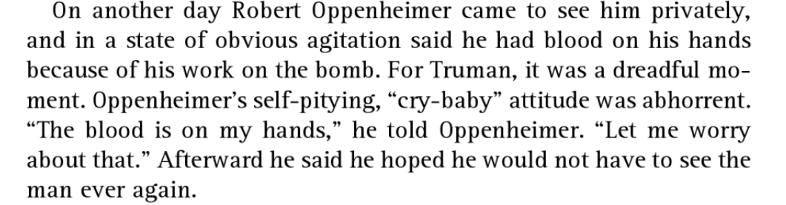

We went to see Oppenheimer in 70mm IMAX yesterday. It was a fantastic experience, but I’m not a movie critic so I’ll leave to others to explain why Nolan is especially good at pointing cameras at things. The relentless pace, over a nearly continuous musical score, struck me as an effective way to keep one’s attention over a long span. The below is a grab-bag of some relevant observations, both new and old, on the subject, stretching back twenty years.
- Truman in the movie
I am not particularly taken by the complaint, articulated in this newspaper column, that the movie is somehow unfair to Harry Truman. The one scene in which Truman appears is an almost literal representation of the president’s own telling of his meeting with Oppenheimer. I append below David McCullough’s version from Truman; McCullough is of course highly sympathetic to his subject.1

The version from the Bird and Sherwin biography of Oppenheimer is here, if you’re curious.
That covers the substance of what Truman does in that scene; as to how he pronounces “Nagasaki,” look, Gary Oldman’s Missouri accent is not what I’d call authentic in any respect and that pronunciation is the least immplausible part of it. If you want to hear Truman say “Hee-ro-shee-ma,” though, here’s a link.
- Lewis Strauss
Oppenheimer’s principal antagonist in the movie is Lewis Strauss, who I know from his role as one of Herbert Hoover’s circle of long-serving, loyal friends. Strauss played a key part in Hoover’s use of the Office of Naval Intelligence to burgle Democratic Party headquarters in New York, as discussed in Jeffery Dorwart’s Conflict of Duty. “In 1930 the president of the United States authorized the burglary of private property for strictly personal reasons,” Dorwart writes. Hoover wanted to know what Democratic politicians might say about his handling of the Depression. So he asked Strauss to find out; Strauss contacted the head of ONI’s local office, who introduced him to Glenn Howell, an ONI officer. Dorwart’s source is Howell’s diary, which says, “Strauss told me that the President is anxious to know what the contents of the mysterious documents are,” and that “Strauss is authorized by the President to utilize the services of any one of our various government secret services.”2 Howell broke in, and shadowed a Democratic operative for a bit. The break-in produced no significant information, but ONI apparently didn’t like it, as they sealed the records and said they should be kept from the public.
In the movie, Strauss exhibits an overly paranoid view of the world, as the Alden Ehrenreich character tells him. That seems consistent with this proto-Nixonian episode.
- The atomic bombings
I imagine my UC colleague Sean Malloy will have had a rough time with the atomic targeting scene. Generally the movie steers clear—clearer than the Bird and Sherwin book on which it’s based—of the strategy for use of the atomic bomb, which is often poorly represented in popular writing.
In short, though, I will note that the probable alternative to the use of the bombs was not an invasion, but rather continued firebombings with B-29s and strafings with P-51s, and it’s not at all clear the Japanese were about to surrender or when they would have surrendered.3
For myself, I’m often puzzled by people’s tendency to treat the atomic bombings as if they occurred in isolation, rather than as the logical outcome of strategic bombing as it had been conducted to that point. I’ll link here and, for archival purposes, paste below my old post on this point, followed by an older post on the atomic bombings that I wrote for Eric Alterman’s MSNBC blog “Altercation.”
- The source material
I reviewed American Prometheus when it first came out, in 2005, also for “Altercation.” It’s still sort of online, but it’s quite likely to go away, so I’ll paste that below as well.
The first nuclear option
Kai Bird and Martin J. Sherwin, American Prometheus: The Triumph and Tragedy of J. Robert Oppenheimer. New York: Alfred A. Knopf, 2005. xiv+722 pp. Illustrations, notes and index. Cloth, US$35
by Eric Rauchway
Albert Einstein thought Robert Oppenheimer was a fool for love, and an especially worthless kind of love at that: “he loves a woman who doesn’t love him – the United States government.” (pp. 503-4) To love one’s country – certainly this was worthwhile. But to love a government, when it is going to destroy your reputation? That, Einstein, said, made Oppenheimer a grade-A “narr [fool].” (p. 495) Kai Bird and Martin Sherwin’s life of Oppenheimer makes a good case that Einstein was right. They thus raise the difficult question, what kind of society makes a martyr out of a fool?
- Physics
No matter what else happened, Oppenheimer was always going to be an important physicist. Casual readers of American Prometheus might miss this point, because Oppenheimer was a scholar of a kind that other scholars don’t fully appreciate, and Bird and Sherwin salt their text with cutting if not catty comments even from Oppenheimer’s friends: “He never did any great physics,” said his first-ever doctoral student, Melba Phillips. (p. 89) Murray Gell-Mann said, “He didn’t have Sitzfleisch…. Perseverance, the Germans call it Sitzfleisch, ‘sitting flesh,’ when you sit on a chair…. He didn’t have patience for that….” (p. 375) And that is what most academics have, and what we will, if asked, say we most respect – the ability to apply yourself single-mindedly to a problem until you can deliver an authoritative answer no matter how long it takes. The cult of Sitzfleisch reinforces the myth of the lone scholar pitting his genius against the puzzles of nature.
In truth academic progress occurs within a community, and such communities need their Oppenheimers. For although he did do some good physics himself he had a much more important capacity for coaxing better work from other scholars. A seminar produced sharper insights when Oppenheimer was in the audience, because he could sum up the speaker’s main points better than the speaker himself, and make the right links between the matter at hand and other issues.
In an academic environment, an Oppenheimer is to other professors as the conductor is to an orchestra. The conductor can play several instruments, at least a little, and perhaps has potential to play one superbly. But he rejects mastery of one instrument in favor of an overview of them all. He becomes a complex and opaque figure to the other musicians, who cannot understand how he can keep so many different parts of the score in his head at once. They convince themselves he cannot. He doesn’t write the score or play the music. But he develops the talent around him and the symphonic performance bears his unmistakable imprint: even if the first violins think that really, they could carry on just as well without the guy tapping his baton at the podium, they’re wrong.
So with Oppenheimer, who was a great interpreter, clarifier, and assembler of other scholars’ ideas, and who brought out the best in them. And in the end, he got the job best-suited to his talents and in which he could best serve civilization. After the war and almost until his death in 1967 he directed the Institute for Advanced Study at Princeton, and apparently conducted that rarefied collection of scholars in the historical and hard sciences with a deft hand.
It was where he always should have been. But as a physicist will tell you, while it is easy to figure the path and destination of a body in motion if you’re allowed to ignore outside influences, it becomes a little harder when you add an external, attractive influence. If you add two external attractive influences, it becomes impossible, the body’s motion grows chaotic. Even if you can tell generally where it will go, you can’t be sure how it will get there. And Oppenheimer the important physicist fell prey to two external influences. Before becoming the conductor of the IAS, he responded to the call of patriotism and demonstrated his ability to catalyze groups of academics by orchestrating the Manhattan Project. And before that, he fell under the influence of communism.
- Communism
In 1928, after completing his graduate work at Cambridge and Göttingen, Oppenheimer accepted simultaneous appointments at Caltech and UC Berkeley, spending half the year at each. And in about 1934, according to Bird and Sherwin, he began associating with communists. Oppenheimer’s landlady in Berkeley was a communist. In 1937, Oppenheimer’s brother Frank (a physics grad student at Caltech) joined the Communist Party. So did many of Oppenheimer’s friends, and in particular one girlfriend, Jean Tatlock, whom he went on seeing even after his wedding to Kitty Puening, and after his appointment to Los Alamos.
As American Prometheus tells the story, Oppenheimer came to communism for non-communist reasons. The news from Oppenheimer’s grad-school friends in Nazi Germany was bad and getting worse; in the Bay Area, the longshoremen were striking and the governor was calling out the National Guard to break heads; by 1935 the communist party was aggressively pursuing its toned-down, “popular front” strategy in which it played down its revolutionary intentions in favor of alliances with other, non-Marxist leftists. Frank Oppenheimer never found communist theory compelling but “he was deeply moved by the deplorable condition of local [California] farm laborers and Negroes,” and he had heard about “‘some of the terrible things’ that were happening in Hitler’s Germany, and he was inclined to support any group determined to ‘do something about it.’” (p. 132)
Robert Oppenheimer, touched by all these considerations and also by the Spanish Civil War, gave money regularly to the Communist Party through two of its members, a Stanford physician named Tom Addis and an organizer named Isaac Folkoff, for aid to the anti-Franco Republicans in Spain and to refugees from Hitler’s regime. “I doubt that it occurred to me that the contributions might be directed to other purposes than those I had intended, or that such purposes might be evil. I did not then regard Communists as dangerous, and some of their declared objectives seemed to me desirable,” Oppenheimer later said. (p. 123)
As Bird and Sherwin note, after years of listening at keyholes and wearing out shoe leather, the FBI “would never resolve the question of whether or not Robert [Oppenheimer] was a CP member – which is to say there was scant evidence that he was.” (p. 142) Certainly, if even the G-men couldn’t bring themselves quite to condemn Oppenheimer as officially Red, nobody could. And yet he was embedded in a communist milieu: “his associations with Communists were a natural and socially seamless outgrowth of his sympathies and his station in life.” (p. 136) So much so that, despite the Nazi-Soviet pact of 1939, he stayed close to the Communist Party and continued making his sizable donations to the party until April 1942. In May 1942, he became a research director for the S-1 Committee, created by Franklin Roosevelt to report on the possibility of making an atomic bomb.
- Patriotism
As a research director, Oppenheimer’s talent for conducting emerged: he “showed a refined, sure, informal touch,” Edward Teller said. “I don’t know how he acquired this facility for handling people.” (p. 181-182) General Leslie Groves, appointed by the Army to supervise S-1 spotted this talent in Oppenheimer, and in October 1942 had Oppenheimer appointed director of what was soon known as the Manhattan Project. Oppenheimer picked Los Alamos as the place.
There is more on the physics and engineering of the atomic bomb in Richard Feynman’s “Los Alamos from Below” than in American Prometheus. And perhaps this is as it should be: in Bird and Sherwin’s account, the bomb was something that Oppenheimer “organized into existence” (p. 314) and Oppenheimer’s success was therefore one of organization, not science. When the Allies smuggled the Danish physicist Niels Bohr out of Copenhagen, he thought an atomic bomb intriguing but unlikely, Bird and Sherwin write: “the engineering necessary for separating out U-235 [the explosive isotope of uranium] would require an immense, and therefore impractical, industrial effort.” (p. 269) But on his arrival in the United States, Bohr realized that America, properly motivated, was more than up to the task.
And so were Americans, which is why Oppenheimer – who in 1940 had been ghost-writing non-interventionist briefs for the Communist Party (pp. 144-145) – took the job, and took it wholeheartedly. Alone among the scientists going to Los Alamos, he wanted to wear a military uniform, and had one made up. (The other physicists swiftly dissuaded him from putting it on.) “There was,” Bird and Sherwin persuasively argue, “a lot of apple pie in Robert’s psyche.” Robert Wilson said “Oppie would get a faraway look in his eyes … and tell me this war was different from any war ever fought before; it was a war about the principles of freedom…. a people’s army and a people’s war… It’s the same kind of language [he used before the war], except that now it has a patriotic flavor, whereas before it had just a radical flavor.” (pp. 210-211)
Partly because his patriotism shone so purely, Groves and the Army discounted any suggestion that Oppenheimer was a security risk to the project, from which the Soviets were excluded – even when Oppenheimer mentioned that he had been approached by a Communist friend, Haakon Chevalier, about passing information to the Russians. Oppenheimer said that he replied, “But that would be treason.” (p. 196) And for the duration of the war, that was good enough.
- Chaos
The bomb exploded as advertised. Bird and Sherwin present a version of the decision to drop the bomb in which the war “would surely end” prior to the planned invasion of Japan (p. 301); this is controversial (as Altercation readers know) and they admit the controversy in their endnotes. But it accords with what Oppenheimer came to believe about the bomb, and he lobbied hard for a nonproliferation policy and refused to work on the proposed hydrogen bomb.
Yet he also loved what the bomb did for him. “[H]e had grabbed a metaphorical gold ring and he was happily waving it aloft,” Bird and Sherwin write. (p. 316) He “grew comfortable with the adulation.” (p. 323) So, to assuage his guilt, he quit as director, but to satisfy his zeal for insiderhood, he stayed on as a consultant.
Oppenheimer wanted to wear the uniform but he hated killing people. He had proven immeasurably useful to the U.S. government but he did not want to go on being useful. From this point forward, it was inevitable that the fallout from the volatile combination of Oppenheimer’s past communism and present enthusiasm for insiderhood would poison his career. Bird and Sherwin make it happen in good, brisk prose. A villain, hostile to Oppenheimer for personal or no reasons, arises. A committee forms. Old allegations resurface. In a crisis some old friends – Teller, Groves – prove useless or worse. The committee strips Oppenheimer of his security clearance. Humiliated, he goes back to where he always belonged, in the Princeton idyll.
Other friends stand by him, even though they agree with Einstein. I.I. Rabi said of Oppenheimer that “[i]n addition to being ‘very wise, he was very foolish.’” (p. 211) Rabi thought Oppenheimer fatally afflicted with the desire to remain himself, yet to have a status denied to people like him: “He was East German Jewish, and what happened to them was that they began to value the German culture above their own…. I think he had fantasies thinking he was not Jewish,” Rabi said. If he meant Oppenheimer had fantasies about not being an outsider, then in Bird and Sherwin’s telling he was correct. But neither could Oppenheimer make the sacrifices necessary to become an insider – either during the war or after. “God knows I’m not the simplest person,” Rabi said, “but compared to Oppenheimer, I’m very, very simple.” (p. 77) Bird and Sherwin’s story, littered with insights from acute observers like Einstein, Feynman, Rabi, and Wilson, peopled with the powerful, has at its center this complex figure. A simpler man might command more sympathy and might have evaded destruction. But a simpler man might not have led so many talented people to build the bomb so fast.
One Bomb
On this day in 1945, Harry Truman said, “The world will note that the first atomic bomb was dropped on Hiroshima, a military base.” Or anyway, that’s the recording I’ve previously heard; it differs a little from his officially prepared statement: “Sixteen hours ago, an American airplane dropped one bomb on Hiroshima, an important Japanese Army base.”
Let’s begin with the wording. You wouldn’t normally say, “Hiroshima, a military base” any more than you would say, “Oakland, a military base” or “Seattle, a military base,” or “Houston, a military base”—well, you get the idea. You would normally say, “Hiroshima, a city.”
Indeed it would make greater sense to say “Hiroshima, a military target”—for the Second World War was an industrial war, and civilians did work essential to the war effort throughout the factory towns of the combatant nations. Thus one could make the argument that any considerable city was a legitimate military target.
And throughout the war cities had been targeted. From the time of the aerial bombardments in the First World War, people throughout the world had known that cities would be bombed in the next war and that civilians would be killed, as indeed they were through various small wars in the 1920s. The vision of Atlanta aflame in Gone with the Wind is as much anxious portent of the coming urban infernos as it is a reflection on the Civil War. From the first in the burgeoning big war—from Guernica, Warsaw, the blitz of London; from Coventry through the V-2 assaults (engineered by that great American Wernher von Braun); including Hamburg, Dresden, and Tokyo among others—cities came under fire.
But despite this precedent Truman did not say “Hiroshima, a city” nor even “Hiroshima, a military target.” One might therefore conclude that Truman did not want to speak of Hiroshima as a city, even a city that might legitimately be targeted under the circumstances of a war that had seen plenty of cities targeted.
What was the nature of his unwillingness to make this case? I think it derives in part from a key phrase in the prepared statement: “one bomb.” The atomic bomb was not a precision weapon. Even if you sent waves of B-24’s, B-17’s, or B-29’s to hit a city you could still claim (though, it’s true, with decreasing plausibility as the war went on) that you were not targeting the city, but that you were targeting military sites within the city, and that any civilians killed, whether by stray bombs or by the cumulative firestorms sometimes raised by the incendiary weaponry, were unfortunate if inevitable casualties. (Not everyone made such claims, of course.)
“One bomb” meant that you couldn’t pretend to yourself or anyone else that you weren’t going to kill civilians, that you weren’t targeting a city—by definition the center of a civilization. This feature of atomic weaponry is one—perhaps the most important—of the particularly horrifying features of nuclear bombardment. During the revived enthusiasm for nuclear weaponry in the early 1980s, I asked my mother what would happen if the Russians bombed us with nuclear weapons. “Oh, honey, we’d be dead right away. We’re only thirty miles from MacDill, and that’d be a first-strike target.”
None of which is to say that Truman, or the U.S., necessarily shouldn’t or under any conceivable circumstances wouldn’t have used the weapon, but it does cast some light on a paradox of reaction to the bombing. By generally accepted account, many fewer people were killed in the bombing of Hiroshima than in the bombing of Tokyo, which it would have been equally if not more inaccurate to describe as a military base. Yet there is nothing like a commensurate level of introspection over the bombing of Tokyo. The bombing of Tokyo took many bombs and bombers; Hiroshima only one.
It is useful to remember the bombing of Tokyo when thinking about the atomic bomb. Often, people point out that the bombing saved the U.S. an invasion of Japan and count the casualties of an invasion against the Hiroshima bombing; the bombing thus saved the lives of U.S. soldiers, sailors, and marines. But it is also worth pointing out that had the delivery of the atomic bomb been delayed, any invasion would surely have been preceded by further incendiary bombings of Japanese cities. On this measure it seems quite likely that the use of the atomic weapon killed fewer civilians and fewer Japanese, as well as fewer Americans, than the likely alternative.
Historians also make the case that the brutal efficiency of one-bomb—one-city destruction created a sense of immediacy that had otherwise been lacking among Japanese leaders, and precipitated a decision to surrender that had previously existed only in diffuse form. On this reckoning the single bomb was perhaps more effective than continued conventional bombings at ending the war.
I see I’ve written 750 words on the bomb and only barely touched on two issues—how it related to earlier bombings in the war, and its effectiveness at ending the war. There are other issues; there is an enormous literature on the subject. I’ll put my old discussion of the motives for dropping the bomb under the fold.
It might be worth mentioning too, though, that I almost never teach “the decision to drop the bomb” at even this length in class. I spend a fair bit of time instead on the conventional air war, out of which it seems to me that the atomic bomb developed logically. Given the history of the war to that date I cannot envision the U.S. not using the bomb, nor—considering Dresden and the reaction of Americans to the revelation of the concentration camps—imagine the U.S. would not have used atomic bombs against Germany had they been ready in time.
From five years ago: [as it then was; this was 2003]
Today is the anniversary of the bombing of Hiroshima, which I might not even have mentioned – didn’t we have a big enough fight on the 50th anniversary? Do we have to start ginning up a new one two years before the 60th?
Nichoals Kristof cites “an emerging consensus” among historians: “We Americans have blood on our hands” because of Hiroshima. Borrowing from the President, he critiques “[r]evisionist historians like Gar Alperovitz,” who have shaped “this emerging consensus” that “Washington believed the bombing militarily unnecessary.”
Kristof knows lots of things about lots of things I know nothing about, and I learn from his work, especially on contemporary Asia and Africa. But he doesn’t know “American scholarship” all that well. Even if you’re not an a-bomb expert – I’m not – you can say pretty quickly that Kristof has the wrong end of the stick.
First of all, woe betide anyone who asserts there’s an “emerging consensus” on the atomic bombs of 1945; it’s one of those issues that reliably draws shouty people. And Alperovitz’s work in particular invariably polarizes the profession; reviews of his Atomic Diplomacy and The Decision to Use the Atomic Bomb include accusations of professional malfeasance as well as expressions of strong admiration. When historians get to scuffling over his work, well, the tweed flies.
But second of all, and more importantly, if you went looking for common ground between historians identified with both the left and the right, you would find quite the opposite of what Kristof says.
Walter LaFeber of Cornell says, Militarily, the Americans dropped the first bomb to end the war as quickly as possible and before perhaps a million casualties resulted from an invasion of Japan. America, Russia, and the Cold War, 7th ed. (1993), p. 25
John Lewis Gaddis of Yale says, Having acquired this awesome weapon, the United States used it against Japan for a simple and straightforward reason: to achieve victory as quickly, as decisively, and as economically as possible. We Now Know (1997), p. 87
And Barton J. Bernstein of Stanford said as early as 1974, The administration did not decide to use the bomb against Japan in order to stop Soviet entry into the Pacific war or to gain advantages over the Soviets in Eastern Europe or in the Pacific. Rather, the Truman administration acted upon the inherited [i.e., from FDR] assumption that the bomb was a legitimate weapon for combat use against an enemy…. The combat use of the bomb promised to speed the end of the war and thereby to save American lives. “The Quest for Security,” Journal of American History 60:4, p. 1014
Indeed, Bernstein long ago indicated that what Kristof describes as the Alperovitz “consensus” is dodgy for a few simple reasons.
Truman didn’t per se decide to use the bomb; he simply allowed the existing bomb program established by FDR to go ahead. (This, by the way, is why suggestions that Truman’s bigotry influenced the decision cannot be terribly serious. The bombing had nearly nothing to do with Truman personally.)
Assertions that Truman, or nearly-Secretary-of-State James F. Byrnes, were thinking principally in terms of scaring the Soviets and not of defeating the Japanese come from other people’s (usually self-serving) recollections recorded well after the fact – after they were persuaded that the a-bomb was something terrible and different.
The bomb’s developers didn’t think of it as a deterrent threat rather than a combat weapon. The notion that it belonged to a special category only emerged after people could see what instant, awful and lasting damage it could do.
None of this general belief that the bombs were going to be used for military purposes touches the question of whether they were used in the best possible way – could they have been deployed against a more definitely military target? Could there have been a little longer delay before the second bomb? How many lives did avoiding an invasion really save? Wouldn’t an invasion have cost Japanese lives too – more Japanese lives, maybe, than the bomb? Working up to an invasion would probably have meant continued conventional bombing and continued blockades, generating more casualties even before the invasion itself occurred.
Bernstein again, this time in 1998:
In 1945, before Hiroshima and even afterward, Truman rightly believed that the use of the A-bomb on Japan would be warmly endorsed by Americans, that they never would have understood, much less approved, a decision not to use the weapon if it was available, and that no mainline American politician, who would have been likely to be President at the time, would have decided otherwise…. He also seemed to believe that the use of the bomb, as Secretary Byrnes contended, might help him in dealing with the Soviets. But that hope was never a controlling reason but only a supplementary, and thus a confirming, reason to do what Roosevelt would probably also have done, what virtually all top-level presidential advisers seemed to endorse, and what only one adviser, Under Secretary Bard, who was on the fringes of decision-making, ever questioned before Hiroshima: dropping the bomb on Japan in order to speed a surrender. “Truman and the A-Bomb,” Journal of Military History, 62:3, p. 567
As I say, if there were something like a professional historical consensus, this would be it. Nobody’s happy about the bomb – Truman wasn’t either – but you won’t find hordes of historians going around accusing the Truman administration of using the bombs without military reasons in the midst of what was, after all, a brutal war in which the bombing of civilians had already been established as awful, common practice.
Whatever the shortcomings of my profession, Mr. Kristof – and historians can be maddening – consensus on Alperovitz isn’t one of them. Please build a straw man out of someone else.
Footnotes
David McCullough, Truman (New York: Simon & Schuster, 1992), 570.↩︎
Jeffery Dorwart, Conflct of Duty: The U.S. Navy’s Intelligence Dilemma, 1919--1945 (Annapolis: Naval Institute Press, 1983), 3.↩︎
Waldo H. Heinrichs and Marc Gallicchio, Implacable Foes: War in the Pacific, 1944--1945 (New York: Oxford University Press, 2017).↩︎